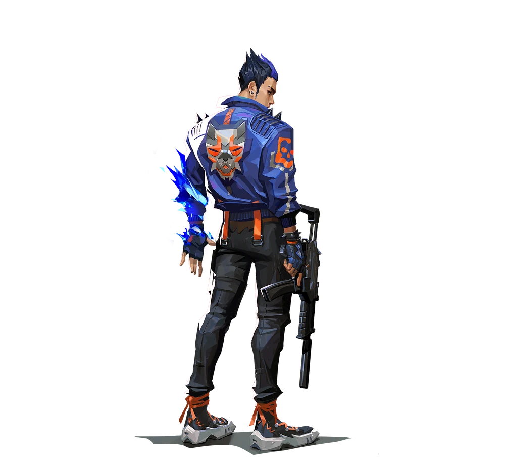

This agent is specifically designed for outplaying your opponents and mastering your utils. The Character Yoru is natively from Japan and is considered widely arrogant and selfish while taking fights according the lore of the game. In Contrast to that comment the agent itself is very reliant on teammates except in the matter of outplaying. The agent allows integration of multiple unusable agents due to his abilities being a sudo Duelist/Initiator, he reigns supreme when it comes to manipulating enemy mind and is generally considered a very high ceiling agent for mastery to the point where even the best yoru player says that he himself is still learning the ways of Yoru. His abilities revolve around him creating confusion in the enemies brain with his Gatecrash(teleport) and Fakeout(clone) while his other abilities like his Blindside(flash) helps him create opportunities and his Ultimate Dimensional Drift helps him gather information like a initiator same as his Blindside.